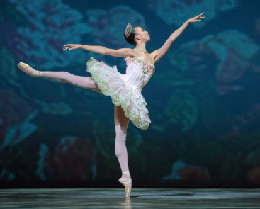
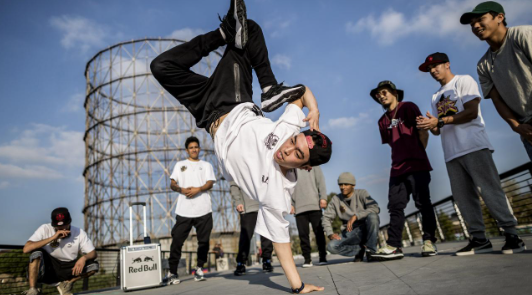

Ballet
El ballet es una danza clásica que se caracteriza por la elegancia, precisión y técnica. Se basa en posturas corporales exactas, movimientos suaves y el uso de zapatillas especiales, algunas con punta. Es muy expresiva, muchas veces cuenta historias a través del cuerpo sin necesidad de palabras.

Danza Moderna
La danza moderna surge como una forma de romper con las reglas estrictas del ballet. Es más libre, emocional y cercana a los movimientos naturales del cuerpo. Los bailarines a menudo bailan descalzos y usan técnicas como caídas, giros y estiramientos.

Hip Hop
El hip hop es una danza urbana nacida en la calle como parte de una cultura que también incluye el rap, el DJing y el graffiti. Es energética, improvisada y muy creativa. Los movimientos suelen ser rítmicos, fuertes y expresivos, y se baila con ropa suelta y cómoda.
